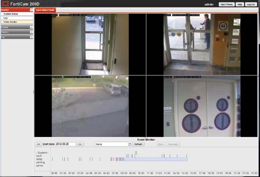
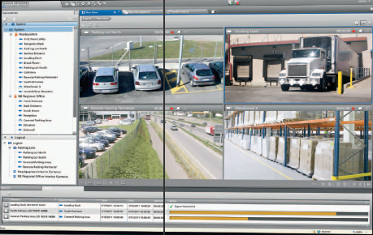
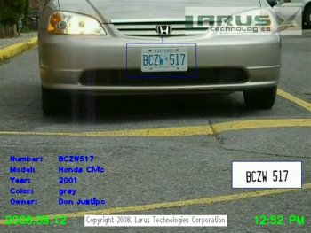
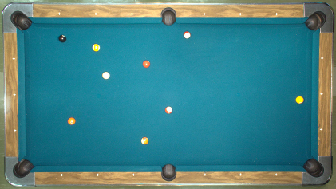

Ken Anderson
Ken Anderson Video Security
At Fortinet, I develop core video functionality for the FortiRecorder product line. These products, launched in 2013, marries Fortinet's acclaimed network security solutions with video streaming technology, firmly propelling Fortinet into the physical security space.
Video Security
At March Networks I developed features such as low latency and graceful degradation of live streaming video, synchronized video playback, and sealed video export for the Command product line. Command is an award-winning new product using cutting-edge technologies for web-based video surveillance systems. These systems are specifically designed for functionality, scalability, low latency, high quality, and international deployment.
Territorial Security
At Larus Technologies I developed video analytic technologies for territorial security scenarios. The system detects, tracks, and recognizes types of objects (license plates, faces, etc.). It also detects suspicious behaviors, counts objects, and raises alerts. This system is part of Larus' Nexus solution, which provides sensor-network-based intelligent surveillance.
Billiards
At Queen's University I used computer-vision and trigonometric techniques to localize and identify pool balls for the Deep Green™ pool-playing robot. This enabled the game state to be encoded, visualized, strategically analysed, then acted upon. At the completion of my work, Deep Green could compete with a human opponent.
